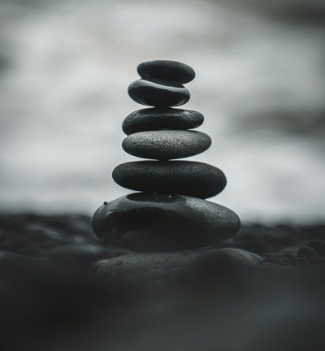
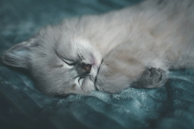
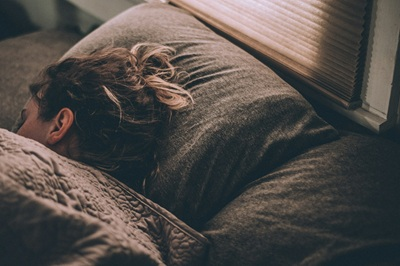
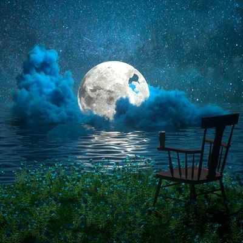
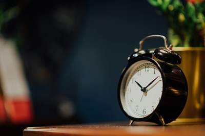
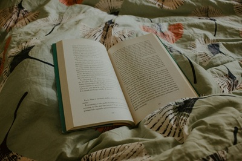
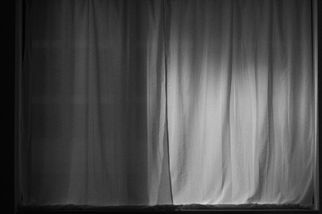
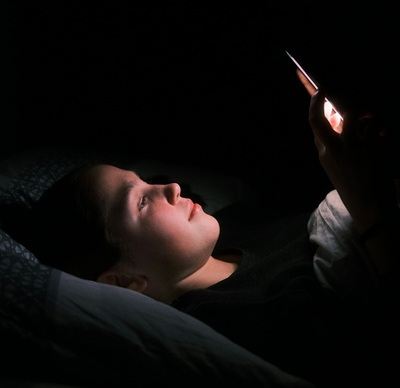

Discover More About Sleep
Get started with some fun facts about it below!
Humans spend about one-third of their lives sleeping.
That’s roughly 25–30 years of sleep in a 75-year lifespan!
Dreams only occur during REM sleep.
You may not remember them, but you dream several times a night.
Your brain is surprisingly active during sleep.
Especially during REM — sometimes more active than when you're awake!
You can’t sneeze while you're asleep.
Your body temporarily shuts off the reflex.
Some people dream in black and white.
It’s more common in people who grew up with black-and-white television.
Your body temperature drops when you sleep.
That’s why cooler room temperatures help you fall asleep faster.
Sleep helps flush toxins from your brain.
This includes beta-amyloid, which can affect memory if it builds up.
Snails can sleep for up to three years.
Not all at once, but in very long intervals!
The average person has about 4–6 sleep cycles each night.
Each cycle lasts roughly 90 minutes.
Why We Sleep
Sleep is essential for our overall well-being, playing a crucial role in maintaining both our body
and mind.
We sleep not just to rest, but because it supports many important functions that keep
us healthy and functioning well.
-
Physical Health
While we sleep, our body gets to work repairing muscles, tissues, and even boosting the
immune system. It’s also when growth hormones are released, which is especially important
for younger people. Without enough sleep, we may feel physically weak, slow to heal,
or more likely to get sick.
-
Brain Function
Sleep gives our brain time to sort through what we’ve learned during the day. It helps
strengthen
memory, supports learning, and clears out waste products—like beta-amyloid, a protein that
can
build
up and affect memory if not removed. That’s why we often feel foggy or forgetful when we
don’t
get
enough rest.
-

Emotional Health
Getting enough sleep helps us stay calm and handle stress better. It allows the brain to
regulate
emotions and respond more clearly to situations, making it easier to stay balanced during
the
day.
Without enough rest, the brain’s emotional control weakens, which can make us feel
irritable,
anxious, or even sad without a clear reason.
Stages of Sleep
Sleep happens in cycles that repeat throughout the night, with each cycle lasting around 90
minutes.
These cycles include 4 different stages which are all important for our health.
-
NREM Stage 1 (Light Sleep)
- The transition between being awake and asleep
- Lasts only a few minutes
- Muscles relax, heartbeat and breathing
slow down slightly
- Easy to wake up during this stage
-
NREM Stage 2 (Light Sleep)
- Deeper than Stage 1 and lasts longer
- Body temperature drops, heart rate slows more
- Brain activity slows with occasional bursts called sleep spindles
- The stage where you spend most of your sleep time

-
NREM Stage 3 (Deep Sleep)
- The deepest and most restorative sleep stage
- Hard to wake up from this stage
- Body repairs tissues, builds muscle and bone,
and strengthens the immune system
- Crucial for physical recovery and overall health

-
REM Sleep (Dream Sleep)
- Rapid Eye Movement stage where most dreaming occurs
- Brain becomes very active, but the body stays relaxed and still
- Important for memory, learning, and emotional processing

How to Achieve Better Sleep
Here are 5 good habits you can adopt to help you sleep better.

Maintain a Consistent Sleep Schedule
Try to go to bed and wake up at the same time every day, even on weekends. This helps
regulate your body’s internal clock and makes falling asleep easier.
Create a Relaxing Bedtime Routine
Do calming activities before bed, like reading or listening to soft music. Avoid screens and
bright
lights, as they can interfere with your body’s production of melatonin, the sleep hormone.


Make Your Sleep Environment Comfortable
Keep your bedroom cool, dark, and quiet. Use blackout curtains or a sleep mask if needed, and
consider earplugs or white noise to block out sounds.
Limit Caffeine and Heavy Meals Before Bed
Avoid caffeine and large meals close to bedtime, as they can disrupt your ability to fall
asleep
or
stay asleep.

Limit Screen Time
Cut back on screen use at least 1 hour before bed. The blue light from device screens can
mess
with
your body’s natural sleep rhythm by reducing melatonin production, making it harder to fall
asleep.